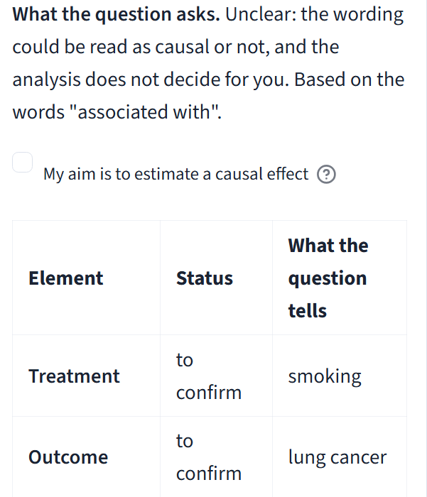

The demo: the question first, then the test
1It reads the question

2DiD on 1,000 worlds per level

The live app, 13 November 2026.
Why it works: the bar is mine, in writing
Parallel trends hold
True effect
−0.50
Average estimate
−0.504
Interval covers
94.9%
Slight divergence
True effect
−0.50
Average estimate
−0.264
Interval covers
31.3%
Test warns
14.2%
My rule: at most 10% bias, at least 90% coverage. Written on 30 October, after the pre-trends run and before the other three threats were simulated.
Bars to scale. PLANNING_LOG.md, 2026-10-30; causal_lab/data/demo_study/results.json.
What I learned: a better score was not a better tool
| Question set | Version | Recall (target 0.70) | Version 2, same set |
|---|---|---|---|
| 2 | 2 | 0.60 | |
| 3 | 3 | 0.83 | 0.80 |
| 4 | 3.1 | 0.86 | 0.79 |
Most of the gain was the new set, not the new code. Since then, every set is frozen before its one run.
Recall of the question reader on causal questions. docs/evaluation/v3/REPORT.md, docs/evaluation/v4/REPORT.md (commits 9880fcb, 14b3db1).
What’s next
- A second raterAll labels come from one rater: the agent that wrote the reader.
- Students’ questionsNone tested yet; French not evaluated.
- Threats combinedThe study varies one threat at a time.
- Cutoff rulesHow often the app finds them is not measured.
docs/evaluation/RATER_PROCEDURE.md; docs/defense/DEFENSE_GUIDE.md.